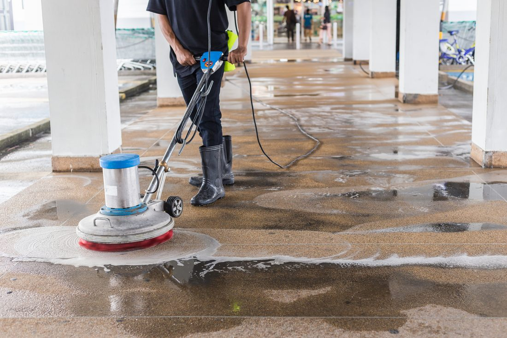
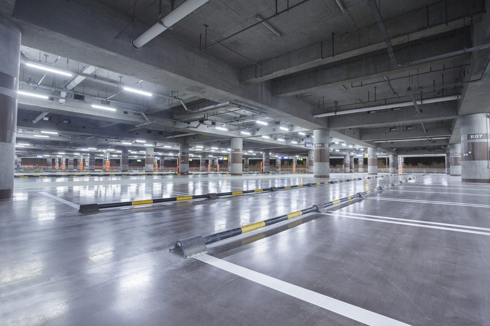
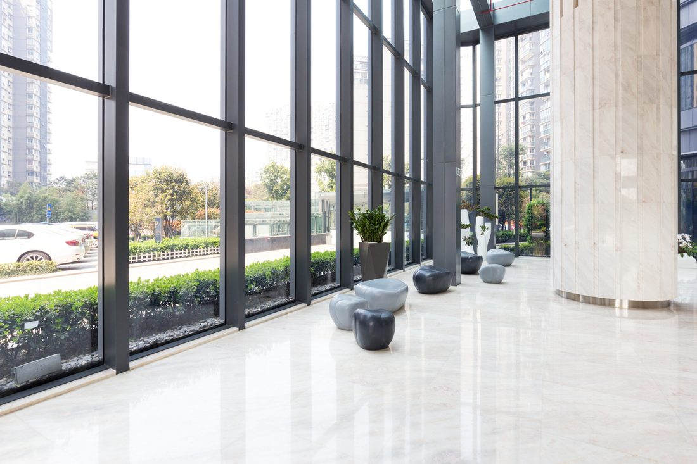
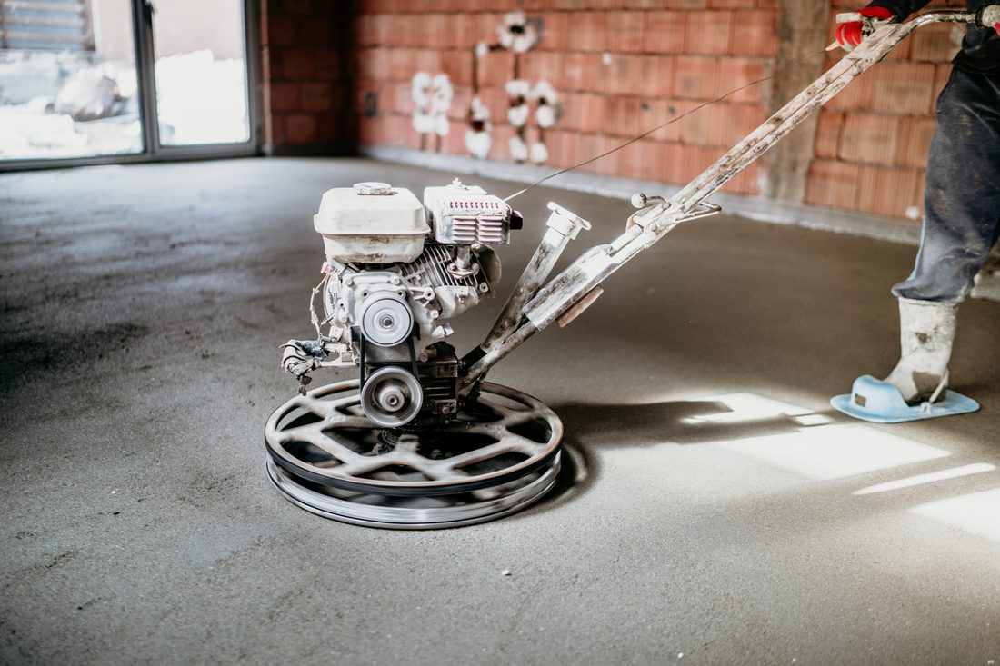
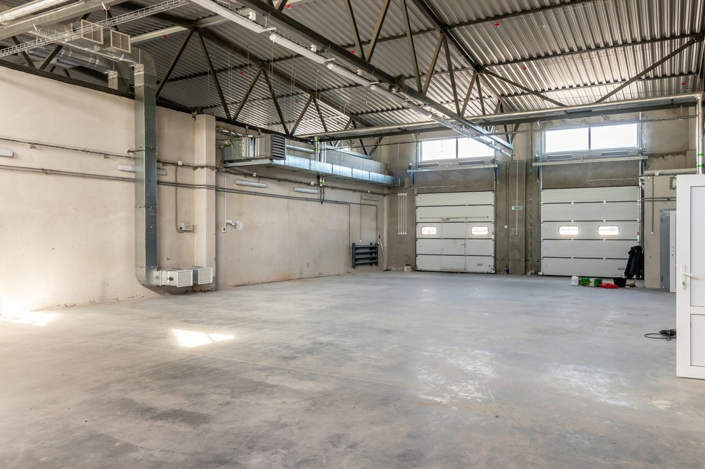
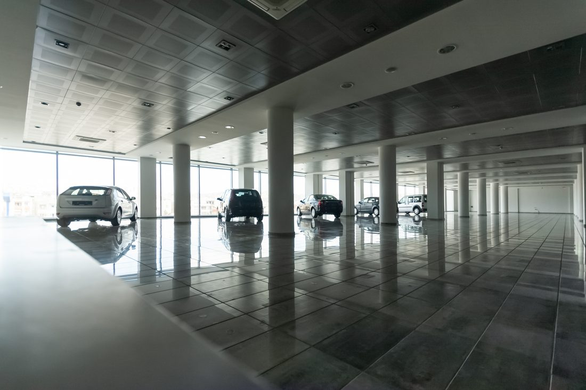

We help Auckland businesses, builders and homeowners polish, prep and uplift their floors — on time, on budget, with minimal disruption.
Get a Free Instant Quote
From polishing a showroom floor to stripping out a whole warehouse of old flooring, our team covers every stage of your flooring project.

Grinding levels out irregularities and exposes the aggregate, then a high-quality sealer locks in a durable, glossy finish.
Learn more →
A seamless, high-gloss finish for indoor car parks that stands up to constant vehicle traffic and improves lighting.
Learn more →
Sleek, low-maintenance polished concrete office flooring that's built to handle heavy foot traffic and still look professional.
Learn more →Durable, low-maintenance polished concrete floors built for heavy machinery, pallet traffic and round-the-clock operations.
Learn more →
Safe, efficient removal of tiles, carpet, vinyl, lino and timber - and grinding back adhesive residue to prep the substrate.
Learn more →
Repolishing and resealing worn polished concrete, plus filling cracks and chips so your floor looks as good as new.
Learn more →A look at the kind of polished concrete, grinding & sealing and floor uplifting work our team carries out across Auckland.

Real feedback from the builders, contractors and homeowners we've helped with their flooring projects.
Led by a director with over 35 years in the flooring industry, we bring a deep understanding of the craft to every project.
We work closely with you to understand your project needs, timelines and budget, tailoring our service to suit.
Our attention to detail ensures all uplifted materials are cleared and the surface is left smooth, clean and ready for the next phase.
We work quickly without compromising on quality, building long-lasting relationships with builders, contractors and homeowners alike.
A simple, four-step process designed for busy builders, contractors and homeowners.
Whether it's a polish, a full uplift, or a maintenance plan — get a free, no-obligation quote from our team.
Get a Free QuoteFill in the form above and our team will be in touch to discuss your flooring project, or reach us directly below.
Auckland wide — commercial, industrial and residential properties.
We aim to get back to every enquiry fast, with a friendly, no-pressure quote.
Common questions about our polished concrete and flooring uplifting services.
We've found that car parks, warehouses, office spaces, and garages greatly benefit from our polished concrete flooring. It's durable and low maintenance, making it an ideal choice for these types of high-traffic businesses.
We're often asked about maintenance for polished concrete floors. They're pretty low maintenance. Simply dust mop daily, and clean spills promptly to avoid staining. A neutral cleaner can be used for occasional deep cleaning.
We're often asked about the duration of our concrete polishing process. Typically, it depends on the floor's size and condition, but generally, we're able to complete a project within a few days to a week.
Yes - floor coverings removal is one of our core services. We use ride-on floor scrapers for commercial sites and heavy-duty equipment for residential jobs to strip tiles, carpet, vinyl, lino and timber, then grind back the adhesive residue so the substrate is ready for your new flooring.
Absolutely, we can customise polished concrete floors in colour or design. We're experienced in creating unique looks, from classic grey to vibrant hues, and even embedding patterns or logos into the concrete surface.